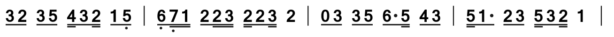
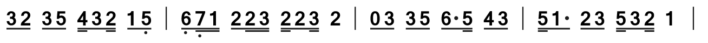
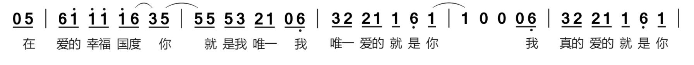

个人乐理自学笔记
本节内容参考自三分钟音乐社 《零基础学音乐·自学乐理第二季》 60-84节
基本节奏型
对四分音符进行拆分，可以得到不同的节奏型，一共有九种。
四分节奏
最简单的拆分方式就是不拆分，称为四分节奏型。
八分节奏
把四分音符拆成两个八分音符。  【例】
【例】
十六分节奏
把四分音符拆成四个八分音符。 【例】
前八后十六节奏
把四分音符拆成一个八分音符（在前）与两个十六分音符（在后）。

前十六后八节奏
把四分音符拆成一个八分音符（在后）与两个十六分音符（在前）。 【例】
前八分附点节奏
把四分音符拆成一个附点八分音符（在前）与一个十六分音符（在后）。
后八分附点节奏
把四分音符拆成一个附点八分音符（在后）与一个十六分音符（在前）。
 【例】
【例】
小切分节奏
把四分音符拆成一个八分音符（在中间）与两个十六分音符（在两侧）。
切分改变了音乐中“先强后弱”的强弱关系。中间音符为强音，两侧音符为弱音。
 【例】
【例】
三连音
把四分音符平分成三分。
三连音的总拍数代表其下方常规音符拍数的两倍，简称“三代二”。因此四分音符时长的三连音用八分音符作为常规音符表示。
【例】
节奏型的变体
大附点及其变体
将两个四分音符拆成一个附点四分音符与一个八分音符，称为大附点。时长为附点节奏的两倍。 大附点节奏的一种变体形式是将八分音符替换为两个十六分音符。附点四分音符不能变动。 【例】
大切分及其变体
将两个四分音符拆成一个四分音符（在中间）与两个八分音符（在两侧），称为切分。时长为小切分节奏的两倍。
 大切分节奏的变体可以将两侧的八分音符替换为十六分音符。中间的四分音符不能变动。
【例】
大切分节奏的变体可以将两侧的八分音符替换为十六分音符。中间的四分音符不能变动。
【例】
三连音的变体
三连音的总拍数代表其下方常规音符拍数的两倍，简称“三代二”。四分音符（一拍）时长的三连音用八分音符作为常规音符表示。同理，两拍时长的三连音用四分音符作为常规音符表示，四拍时长的三连音用二分音符作为常规音符表示，半拍时长的三连音用十六分音符作为常规音符表示。
三连音下方部分（或全部）常规音符也可以在不改变总时长的前提下用其他常规音符代替，较复杂且不常见，不再过多叙述，感兴趣者可以参考这个视频。
【零基础学音乐·自学乐理】71-打拍子（12）-三连音的变体
基本节奏型的首位休止
指基本节奏型的第一个音符用休止符替代。
【例】
反拍节奏
指强拍强位被休止的节奏形态。八分节奏的首位休止是典型的反拍节奏之一。
其律动与常规节奏相反，有较强的动感，常用于R&B、雷鬼等风格音乐。
“弱起节奏”与“连续切分节奏”也是反拍节奏的重要形态。
【例】
弱起节奏
指从弱拍开始的节奏，可从一小节的任意一个弱拍开始。可分为正拍弱起与反拍弱起两种。
【例1-正拍弱起】
【例2-反拍弱起】